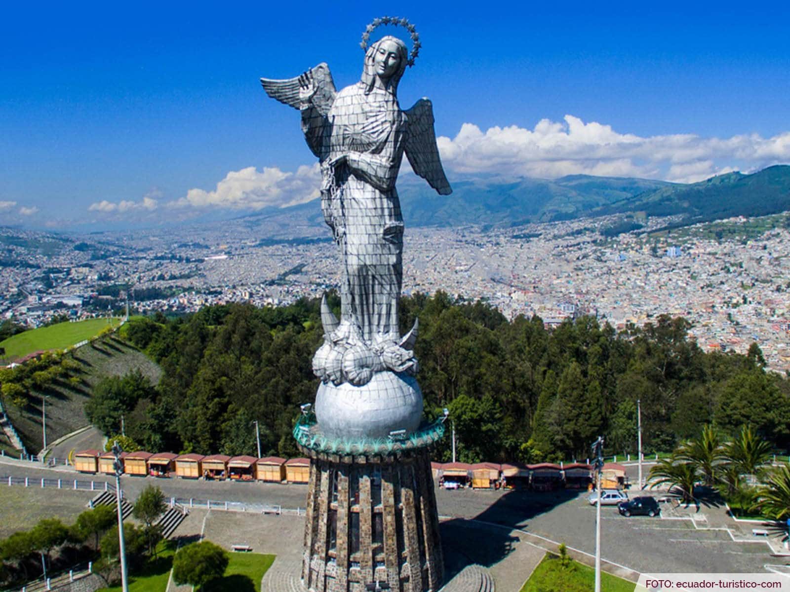

El Panecillo
El Panecillo es una elevación natural de 3.000 metros sobre el nivel del mar, fue bautizada con este nombre por su parecido con un pequeño pan; está enclavada en el corazón mismo de la ciudad de Quito. Es uno de los sitios más visitados de la ciudad. Por su ubicación se ha convertido en el más importante mirador natural de la ciudad de Quito declarada como Patrimonio Cultural de la Humanidad, desde el se puede apreciar la disposición urbana de la capital, desde el Centro Histórico de Quito y la emblemática calle La Ronda y hacia los extremos norte y sur.
¿Que debes saber?
- No tiene costo el acceso
- Horario: Lunes a miércoles de 9:00 a 17:00 y de jueves a domingos de 9:00 a 21:00
- Servcios: Guianza, alimentación, artesanías
- Se puede acceder al museo, tiene un costo minimo por persona
Como llegar
Para subir hasta el mirador a pie, puede utilizar una de las vías más importantes que parte desde la calle García Moreno en pleno corazón del Centro histórico de Quito; si el ascenso lo hace en un vehículo, puede avanzar utilizando la avenida Melchor Aymerich, que es la única vía que lo comunica con la cúpula.
Para acudir al Panecillo, especialmente al interior del monumento de la Virgen de Quito, recomendamos ir entre las 9h00 y las 18h00 de lunes a viernes, los sábados y domingos de 9h00 a 17h00.